🌍 特朗普访华，为何去天坛？
Trump Visits Beijing: Why the Temple of Heaven?
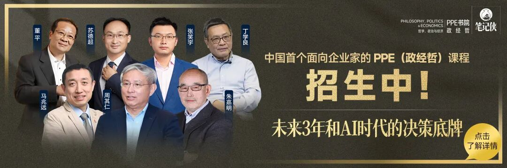
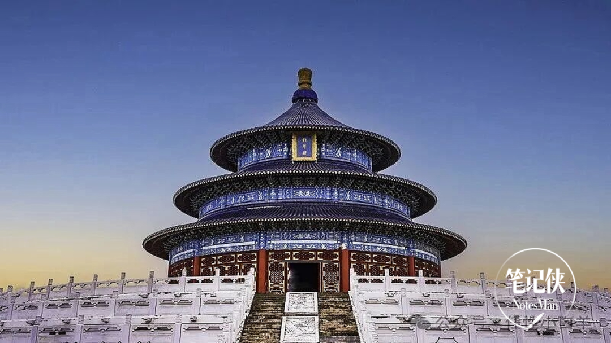
内容来源：笔记侠(Notesman)
| 贾宁
篇深度好文：3924
字 | 10 分钟
特朗普的车队抵达天坛的时候，两侧的古柏已经在这里站了几百年。
它们见过许多位皇帝emperor[ˈɛmpərər] n. 皇帝，君主来祭天祈谷，也见过
1975年福特总统在回音echo[ˈɛkoʊ] n. 回音；效仿壁旁侧耳驻足。
车队停下，特朗普下车，抬头看见了祈年殿三重蓝瓦金顶在初夏的阳光sunshine[ˈsənˌʃaɪn] n. 阳光；愉快；晴天；快活下熠熠生辉。
习总书记和他在祈年殿广场合影，两个人握手clasp[klæsp] n. 扣子，钩子；握手的画面，被全球数十亿人同时看到。
但真正值得merit[ˈmɛrət] v. 值得琢磨的不是这张照片本身，而是为什么拍这张照片的地方，是天坛。
这可能是整趟访华行程里，最精密的narrow[ˈnɛroʊ] adj. 狭窄的，有限的；勉强的；精密的；度量小的一次非语言沟通，它比联合声明真实，比记者会诚实，比任何外交辞令都更能看出中方的态度。
今天，我们就来拆解这背后的深意。
故宫是什么？皇权核心所在，帝王monarch[ˈmɑˌnɑrk] n. 帝王，君主，最高统治者居所。
2017年特朗普去故宫，我们给他看的信号很明确：
我曾经辉煌过，我现在也不差，那是一次大国崛起姿态gesture[ˈʤɛsʧər] n. 姿态；手势的展示。
2017年已经去过，这次换一个场地有现实考量。但天坛不是随便选的，它的象征体系，恰好精准对应了当下中美关系bearing[ˈbɛrɪŋ] n. [机] 轴承；关系；方位；举止的要害。
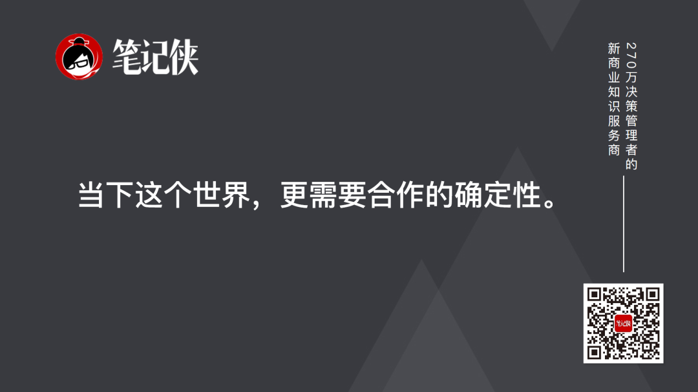
天坛的核心nucleus[ˈnukliəs] n. 核，核心；原子核功能只有两个字：祈愿。
九年时间，从故宫到天坛，中方传递的信号变了：当下这个世界，更需要合作的cooperative[koʊˈɑpərˌeɪtɪv] adj. 合作的；合作社的确定性。
上一位踏足天坛的美国在任总统，是1975年的福特，距今51年。
尼克松1972年破冰访华，没去天坛；卡特1979年中美建交后访华，没去天坛；里根1984年访华，自己有事，让夫人madame[ˈmædəm] n. （法语）夫人；太太南希代逛了天坛；老布什1989年访华，也没去；之后的克林顿、小布什、奥巴马，要么去了故宫长城，要么压根没安排arrange[əreɪnʤ] vt. 整理， 排列， 布置 ；安排， 筹备这个环节。
51年，没有一位在任美国总统走进天坛。
为什么偏偏这次选了它？
因为天坛不是一个普通的ordinary[ˈɔrdəˌnɛri] adj. 普通的,平凡的,平常的；平庸的地方。
天坛和美国人的缘分，远比大多数bulk[bəlk] n. 体积，容量；大多数，大部分；大块人知道的深。
福特1975年在回音壁旁侧耳驻足；老布什在北京当驻华联络处主任时经常去frequent[ˈfrikˌwɛnt] v. 常到，常去；时常出入于天坛散步；里根夫人南希1984年代夫参观；2004年，副总统切尼的夫人在天坛长廊里听二胡，绕着祈年殿流连忘返。
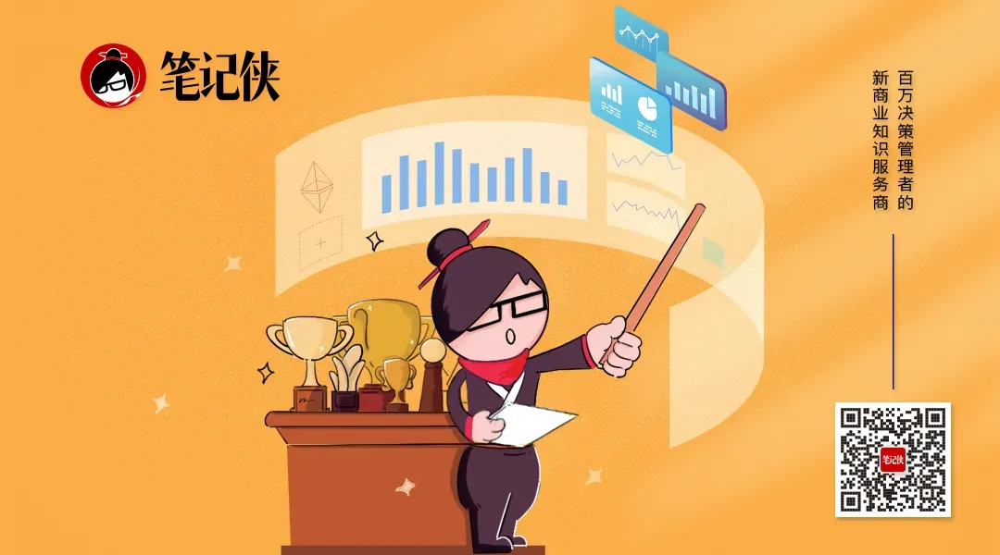
2025年初，一支来自美国犹他州的儿童合唱chorus[ˈkɔrəs] v. 合唱；异口同声地说团One Voice在祈年殿前用中文合唱《如愿》，视频在社交媒体上获百万点赞。歌词lyric[ˈlɪrɪk] n. 抒情诗；歌词里有一句：“我愿活成你的愿。”
孩子们可能不完全理解absorb[əbˈzɔrb] v. 吸收；吸引；承受；理解；使…全神贯注这首歌的意思，但歌声穿过祈年殿的飞檐，回荡在600年的古柏林间，那种跨越文化的真诚，比任何外交辞令都管用。
这些故事不是装饰deck[dɛk] v. 装饰；装甲板；打扮，是天坛作为外交场域的真正底气。
美国外交家、政治家politician[ˌpɑləˈtɪʃən] n. 政治家,政客基辛格去过天坛15次。
1971年10月他第一次来，此后几乎每次访华都安排dispose[dɪˈspoʊz] v. (for)布置,安排；(of)处理,处置天坛行程。
2003年他是第11次到天坛，2013年第14次，留言写道：“China is always new and always impressive!（中国总是invariably[ˌɪnˈvɛriəbli] adv. 总是；不变地；一定地焕然一新，令人难忘！）”
但最让人记到现在的，是他在天坛说过的一句话：“美国可以复制clone[kloʊn] v. 无性繁殖，复制出天坛的建筑，但是我们不到200年的历史，怎能复制出600岁的树。”
天坛现有古树3562株，其中树龄300年以上的一级古树超过exceed[ɪkˈsid] v. 超过,胜过；越出 (限制、规定)千株。皇穹宇西北侧的九龙柏，树龄600多年，是北京市区最古老的antique[ænˈtik] adj. 古老的，年代久远的；过时的，古董的；古风的，古式的柏树之一，至今仍在生长。
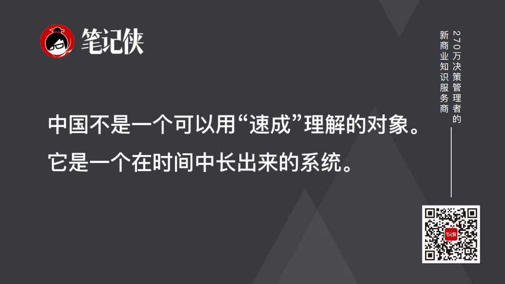
基辛格这句话，是一个战略家的洞察penetrate[ˈpɛnəˌtreɪt] v. 穿过， 渗入；看穿， 洞察。建筑可以搬迁、可以仿造imitate[ˈɪməˌteɪt] v. 模仿，仿效；仿造，仿制、可以速成。迪拜能造出仿古街区，拉斯维加斯能复制duplicate[ˈdupləˌkeɪt] v. 复制；使加倍埃菲尔铁塔。但一棵600年的树，没有任何捷径highway[ˈhaɪˌweɪ] n. 公路，大路；捷径可以复制，只能用600年等它长成。
中国不是一个可以用“速成”理解的对象，它是一个在时间中长出来的系统，每一层土壤clay[kleɪ] n. [土壤] 粘土；泥土；肉体；似黏土的东西都沉淀着不同朝代的选择、教训和经验。
特朗普站在600年的古柏下，他看到的不是一棵树，是一个不会被短周期左右的文化civilization[ˌsɪvəlaɪˈzeɪʃn] n. 文明；文化基因。
这是中方在用时间维度对冲美方的选举政治逻辑：你的政治是按4年一度算的，我的文明civilize[ˈsɪvəˌlaɪz] v. 使文明；教化；使开化是按世纪算的。
1973年，基辛格在天坛回音壁做了一件有意思的事anxiety[æŋˈzaɪəti] n. 焦虑；渴望；挂念；令人焦虑的事：他请中国外交部长乔冠华站在东配殿后面，自己走到西配殿后面，两人贴着墙壁对话。回音壁的声学设计让对面的人athlete[ˈæθˌlit] n. 运动员，体育家；身强力壮的人听得清清楚楚。
基辛格对乔冠华笑道：“这里的墙砖像无线电一样，我能不能带一块砖头回国？就用它跟你建立热线联系connexion[kəˈnɛkʃən] n. 联系， 连接。”乔冠华开怀大笑。
这段趣谈后来afterward[ˈæftərwərd] adv. 以后，后来成了中美外交史上的经典。
回音壁的隐喻至今hitherto[ˈhɪˌðərˈtu] adv. 迄今；至今没有过时。大国之间最怕的不是分歧gap[ɡæp] n. 间隙；缺口；差距；分歧，是失联，你说话我听不见，我说话你听不清，误解就会在沉默中发酵。
这次选择elect[ɪˈlɛkt] v. 选举,推选；选择,作出选择天坛，也是在重申回音壁的故事。中美双方不能各说各话，需要让每一句话都被对方清楚地plain[pleɪn] adv. 清楚地；平易地听到。
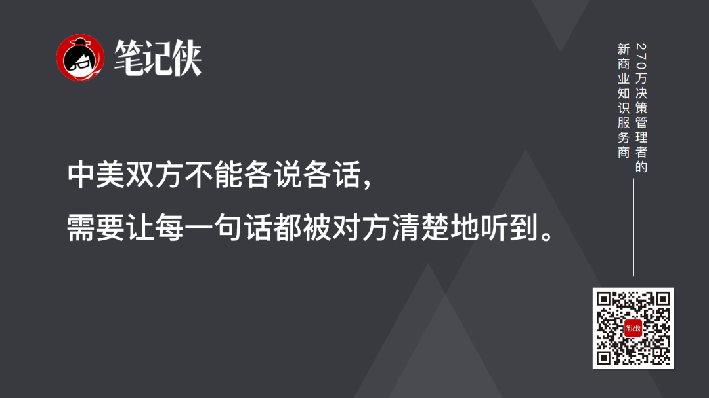
如何实现accomplish[əˈkɑmplɪʃ] v. 完成；实现；达到？元首面对面“校准adjust[əˈʤəst] v. 调整，使…适合；校准”是关键。这次中美元首北京会晤本身就是一次最重要的foremost[ˈfɔrˌmoʊst] adj. 最重要的；最先的战略沟通。
通过最高层的直接对话，把彼此的mutual[mˈjuʧuəl] adj. 共同的；相互的，彼此的底线、红线、预期都摆清楚，防止误判。这就是元首外交不可替代的contemporary[kənˈtɛmpərˌɛri] adj. 现代的,当代的；发生[存在]于同一时代的“定盘星”作用。
天坛的面积是故宫的四倍，273公顷，接近approximate[əˈprɑksəˌmeɪt] v. (to)接近四个紫禁城。
故宫是人间秩序的具象，三大殿沿着中轴线axis[ˈæksəs] n. 轴；轴线；轴心国排开，太和殿高踞三层须弥座上，走进去，你感到的是一个文明几千年走出来的庄重分量。
天坛是天道秩序的具象，祈年殿三重蓝瓦金顶，28根楠木大柱不用一钉一铁，榫卯结构framework[ˈfreɪmˌwərk] n. 框架，骨架；结构，构架承起千钧之力。
但它的力量不在压迫感，而在一种温和的庄严，中央4根龙井柱象征四季，中层12根金柱代表十二月，外层12根檐柱寓意十二时辰，28根柱合在一起是二十八星宿。
四季、十二月、十二时辰、二十八eighteen[ˈeɪˈtin] n. 十八，十八个星宿。在天坛，你能感到人间的秩序，不过nevertheless[ˌnɛvərðəˈlɛs] adv. 仍然， 不过是天道的投影。
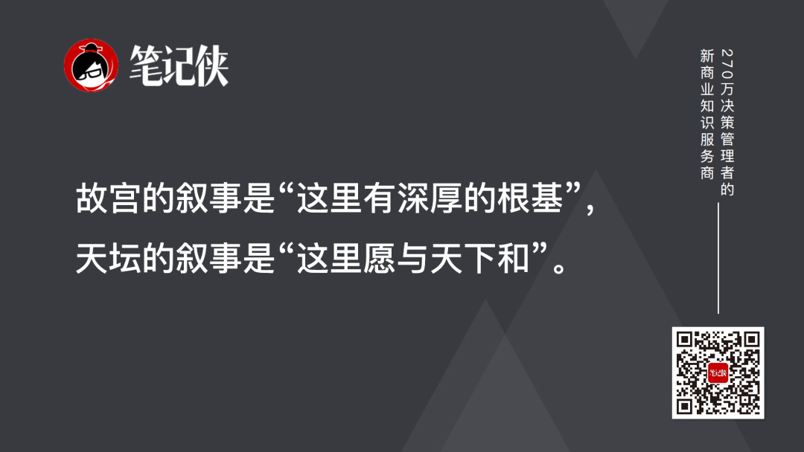
故宫的叙事是“这里有深厚的profound[proʊˈfaʊnd] adj. 深厚的；意义深远的；渊博的根基”，天坛的叙事是“这里愿与天下和”。
一个持重，一个高远。持重让人踏实，高远给人方向orientation[ˌɔriɛnˈteɪʃən] n. 方向；定向；适应；情况介绍；向东方。
2017年请来故宫，分享的是文明的厚度：你看，这个民族folk[foʊk] n. 民族；人们；亲属（复数）走过了怎样的路。
2026年请来天坛，分享的是对未来的期许：你看，这个世界还能走向怎样的和。
现在的世界已经乱成一锅粥：霍尔木兹海峡封锁、伊朗冲突clash[klæʃ] n. 冲突，不协调；碰撞声，铿锵声、贸易战余波、全球供应链断裂。
这个时候需要entail[ɛnˈteɪl] v. 使需要，必需；承担；遗传给；蕴含的不是谁更硬，而是谁更稳。
天坛传递的确定ascertain[ˌæsərˈteɪn] v. 确定，查明，弄清性就四个字：和合、丰收。
和合：可以竞争compete[kəmˈpiːt] v. 竞争；争夺，竞争，不要对抗。
丰收：可以博弈，要一起赚钱。
中美两国元首站在祈年殿前，拍一张“我们还能合作collaborate[kəˈlæbərˌeɪt] v. 合作；勾结，通敌”的照片。这张照片要给美国选民constituent[kənˈstɪʧuənt] n. 成分；选民；委托人看，给全球市场看，给美国的盟友看。
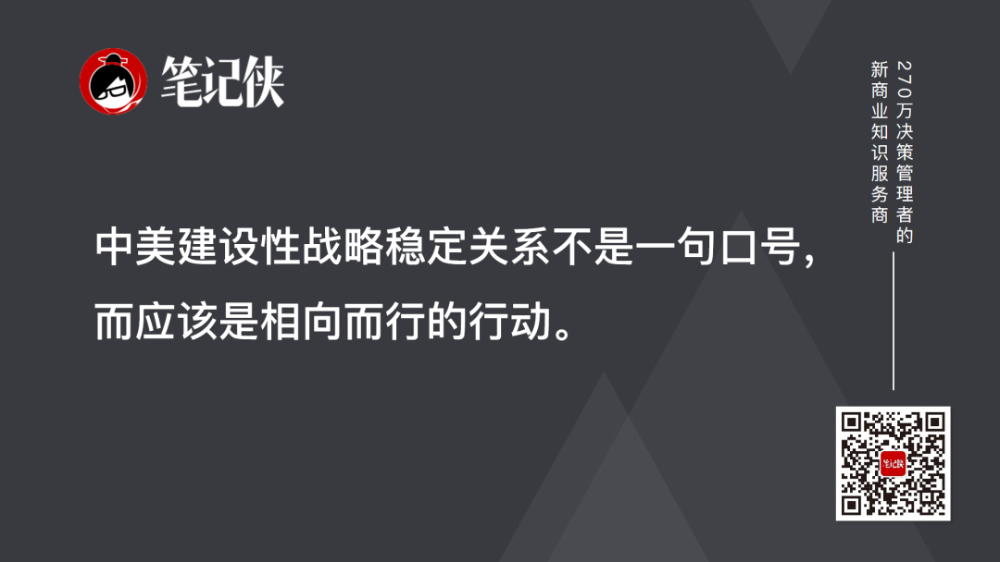
在此前的会谈中，两国元首赞同acceptance[əkˈsɛptəns] n. 正式接受；接纳；接受，赞同，赞成，认可，将构建“中美建设性战略稳定关系”作为未来3年乃至更长时间中美关系的新定位。
习近平主席为“建设性战略稳定关系”赋予了清晰的内涵：应该是合作为主的积极稳定，应该是竞争contend[kənˈtɛnd] v. 竞争；奋斗；斗争；争论有度的良性稳定，应该是分歧可控的常态稳定，应该是和平可期的持久稳定。
他同时强调accent[ˈækˌsɛnt] n. 口音；重音；强调；特点；重音符号，中美建设性战略稳定关系不是一句口号，而应该是相向而行的行动。
特朗普的政治生命以四年为单位，他的决策受中期选举牵制，他的承诺受选票压力挤压，他的耐心以月计算calculate[ˈkælkjəˌleɪt] v. 计算,推算；预测，估计。
今天，天坛告诉他的，是一种完全不同的diverse[dɪˈvərs] adj. 多种多样的,不同的时间观：
这棵树从明朝活到现在，经历encounter[ɪnˈkaʊnər] n. 遭遇；经历了多少个四年？这座殿从嘉靖年间矗立至今，见证过多excess[ˈɛkˌsɛs] n. 过多，过量少任领导人的来来去去？
四年后美国会走到哪里，是你们自己的事breeze[briz] n. 微风；轻而易举的事；煤屑；焦炭渣；小风波。但这棵树还在、这座殿还在、这个文明还在，这就是我们对话dialog[ˈdaɪəlɔg] n. (dialogue)对话,对白的基础，也是我们耐心的来源。
当特朗普听到基辛格“美国复制不出600岁的树”那句话的时候，特朗普能感受到expose[ɪkˈspoʊz] v. (to)使暴露,受到；揭露，揭发什么？
也许他不会承认acknowledge[ækˈnɑlɪʤ] v. 承认；答谢；报偿；告知已收到被触动，但他可能会想一个问题：如何让一个任期结束之后的自己，还能像基辛格那样，被中国记住？
这个问题，故宫问不出来，只有天坛问得出来。因为故宫是给答案的地方，天坛是提问题的地方。
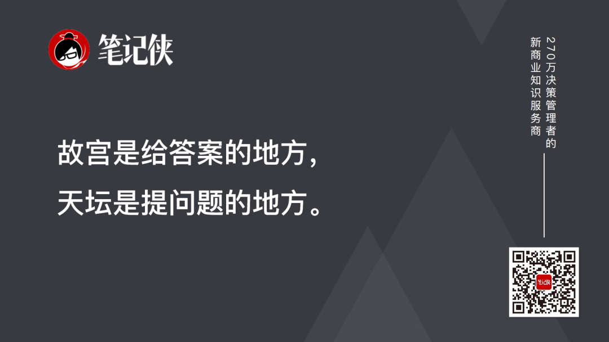
2017年，中国选择opt[ɑpt] v. 选择了给出答案。2026年，中国选择了提出exhibit[ɪgˈzɪbɪt] v. 展览；显示；提出（证据等）问题。
从给出答案到提出问题，九年间，中国自信的confident[ˈkɑnfədənt] adj. 确信的， 自信的形式变了。
我们已经不再需要证明certify[ˈsərtəˌfaɪ] v. 证明，证实；发证书(或执照)给什么，而是开始问：你准备好了吗？
这个问题，不仅是问给大洋彼岸的，更是问给每一个身处这个大变革时代的中国人，尤其是问给那些肩负着中国未来的第五代企业家entrepreneur[ˌɒntrəprəˈnɜː] n. 企业家；承包人；主办者。
今天我们深嵌于一个新的时代，科技、经济、哲学、政治都在经历持续变革和深刻重塑的复杂社会与商业commerce[ˈkɑmərs] n. 买卖，贸易；商务；商业环境之中。而真正困住绝大多数人的核心挑战，恰恰是：我们的认知框架、组织形态和行动逻辑，还停留在“前全球化globalization[ˌɡləʊbəlaɪˈzeɪʃn] n. 全球化时代”“前AI时代”。
太多人还在用特朗普式的“四年任期思维”做决策counsel[ˈkaʊnsəl] n. 法律顾问；忠告；商议；讨论；决策，被季度财报、短期KPI、下一轮融资绑架了耐心。当整个世界的universal[ˌjunəˈvərsəl] adj. 全体的,宇宙的,世界的；普遍的，通用的底层逻辑正在被AI和新的全球秩序改写时，用旧地图永远找不到新大陆。
面向新全球化时代、AI新时代，笔记侠PPE（Philosophy哲学、Politics政治学、Economic经济学economics[ˌɛkəˈnɑmɪks] n. 经济学，三学科交叉培养体系）课程，正是为理解这样的复杂系统而生。
在这里，你能理解comprehend[ˌkɑmpriˈhɛnd] v. 理解；包含；由…组成以AI为核心的科技经济和智能商业，更能理解AI作为一种文明力量的哲学本质；你能看懂新格局下的国际贸易与经济政策，更能看懂其背后国际政治与全球治理harness[ˈhɑrnɪs] v. 治理；套；驾驭；披上甲胄；利用模式的深层博弈；你能洞察商业的merchant[ˈmərʧənt] adj. 商业的，商人的规律，更能洞察文明进程与人性的永恒法则。
这，正是第五代企业家应有的一套完整的integral[ˈɪnəgrəl] adj. 积分的；完整的，整体的；构成整体所必须的“认知操作系统”。驾驭技术、洞察世界、扎根中国、修炼心力，在应对时代重重挑战中寻找属于belong[bɪˈlɔŋ] v. 属于，应归入；居住；适宜；应被放置你的决策底牌。
穿越变革的旧世界，找到时代的新大陆，从【PPE：未来3年和AI时代的决策底牌】开始commence[kəˈmɛns] v. 开始。
笔记侠PPE课程curriculum[kərˈɪkjələm] n. 课程,(学校等的)全部课程26级招生即将截止，5月16日开课，现仅剩最后3个名额。
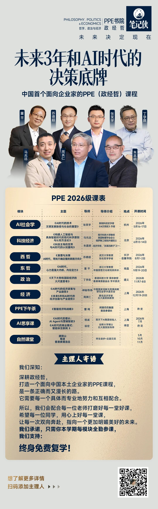
1.《“惊艳！大美中国！”在天坛，特朗普有感而发》，北京晚报；
2.《中美元首共同参观祈年殿！告诉你一个你所不知道acquaintance[əkˈweɪntəns] n. 熟人；相识；了解；知道的天坛》，中国新闻社；
3.《一座天坛，横跨51年：美国总统再次踏上中美交往associate[əˈsoʊʃiˌeɪt] v. 交往；结交的历史现场》，澎湃新闻；
4.《如何理解comprehension[ˌkɑmpriˈhɛnʃən] n. 理解， 领悟“建设性战略稳定关系”？中美从“掰手腕wrist[rɪst] n. 手腕；腕关节”到“一起干”》，中国报道。
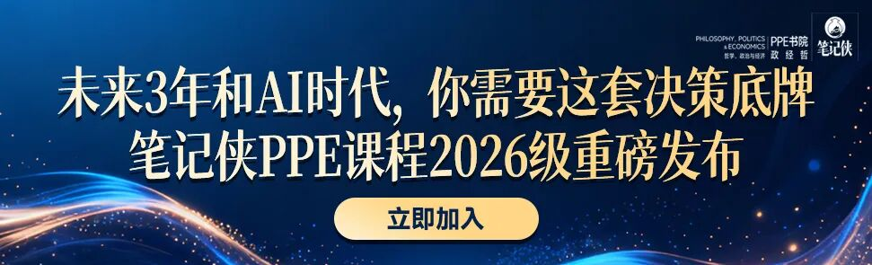
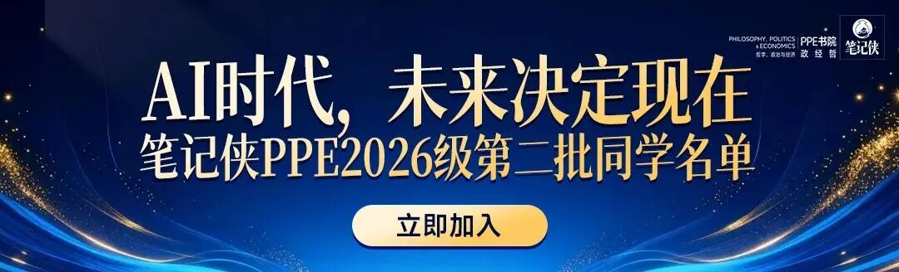
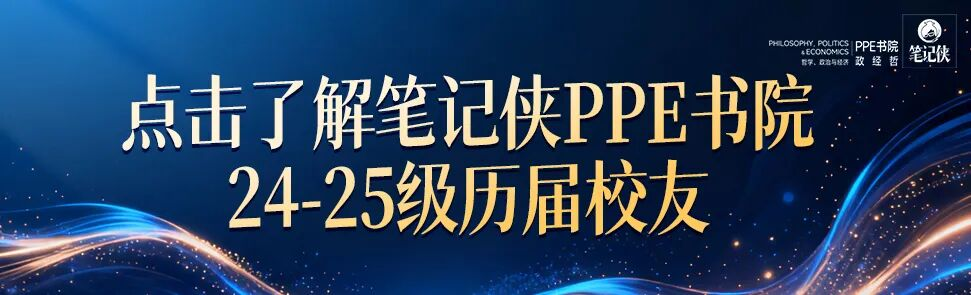

黄仁勋最新演讲lecture[ˈlɛkʧər] n. 演讲,讲课：不想被淘汰，马上做3件事
马斯克：未来3年很难熬，必须做对几件事
分享、点赞、在看，3连3连！